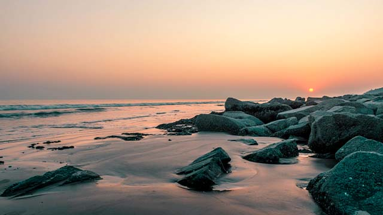
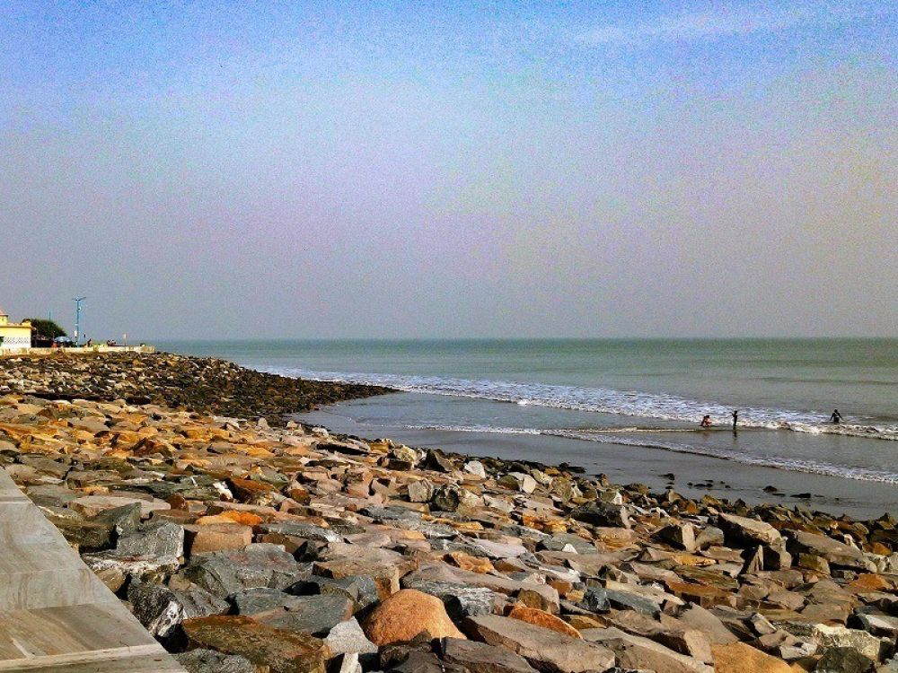
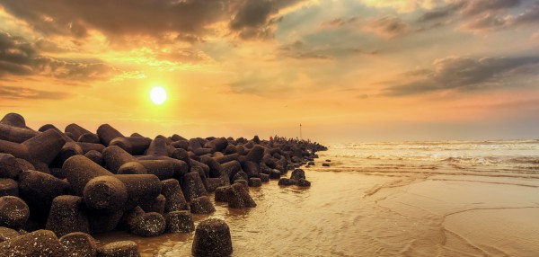
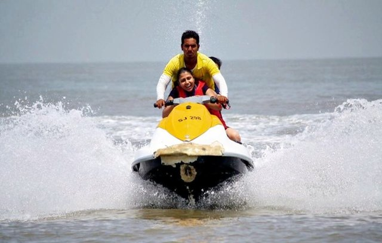
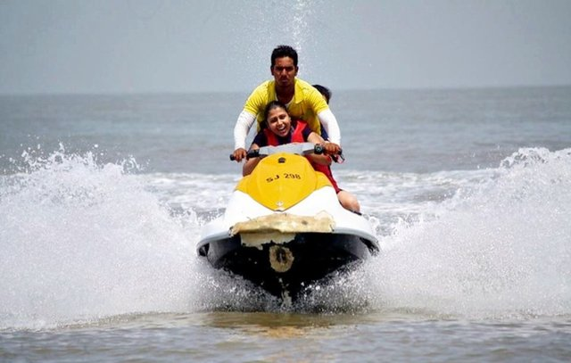
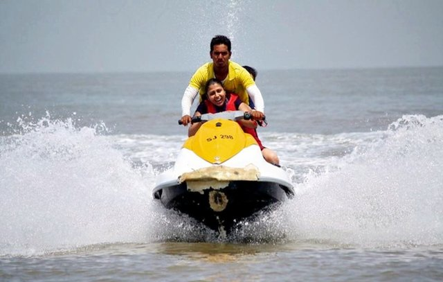

About Digha
Digha, located in the southern part of West Bengal, is one of the most popular beach destinations in India. Famous for its long, serene coastline along the Bay of Bengal, it offers a perfect blend of relaxation, adventure, and nature.
With its beautiful golden beaches, gentle sea breeze, and palm-fringed shores, Digha is a haven for beach lovers. The town is also famous for its tranquil atmosphere, making it an ideal destination for family holidays, couples, and solo travelers.
Highlights:
- Golden sandy beaches ideal for long walks and relaxation.
- Vast expanse of the Bay of Bengal offering beautiful views.
- Visit to the famous Digha Marine Aquarium and Research Center.
- Water sports like boating, jet skiing, and parasailing.
- Nearby attractions like Talsari Beach and Udaipur Beach.

The golden beaches of Digha.


 


Location
Activities:
- Beach activities - Swimming, sandcastle building, and beach volleyball.
- Boating - Explore the Bay of Bengal waters.
- Sunset and sunrise views - Perfect for photography.
- Fishing - Enjoy local fishing activities along the coast.
- Visit local temples and markets - Explore the culture of Digha.
Come visit Digha for a refreshing and relaxing beach holiday with a lot to explore and enjoy by the sea.
Back to Home